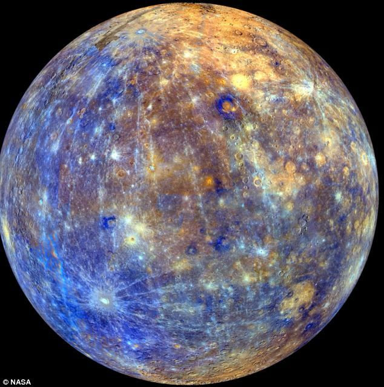

|
Mercury |
Venus |
Earth |
Mars |
| Planets |
 |
 |
 |
 |
| 1 |
Mercury's mass is 0.330 (10^24) kg. |
Venus's mass is 4.87 (10^24) kg. |
Earth's mass is 5.97 (10^24) kg. |
Mars's mass is 0.642 (10^24) kg. |
| 2 |
Mercury's orbital period lasts 88 days. |
Venus's orbital period lasts 224.7 days. |
Earth's orbital period lasts 365.2 days. |
Mars' orbital period lasts 687 days. |
| 3 |
Mercury is 57.9 (10^6) km from the sun. |
Venus is 108.2 (10^6)km from the sun. |
Earth is 149.6 (10^6)km from the sun. |
Mars is 228 (10^6)km from the sun. |
| 4 |
Mercury's gravity is 3.7 m/s^2 |
Venus's gravity is 8.9 m/s^2 |
Earth's gravity is 9.8 m/s^2 |
Mars's gravity is 3.7 m/s^2 |
| 5 |
Mercury's mean temperature is 167 degrees celsius. |
Venus's mean temperature is 464 degrees celsius. |
Earth's mean temperature is 15 degrees celsius. |
Mars's mean temperature is -65 degrees celsius. |
| 6 |
Mercury has 0 moons. |
Venus has 0 moons. |
Earth has 1 moon. |
Mars has 2 moons. |
| 7 |
The length of Mercury's day is 4222.6 hours. |
The length of Venus's day is 2802 hours. |
The length of Earth's day is 24 hours. |
The length of Mars's day is 24.7 hours. |